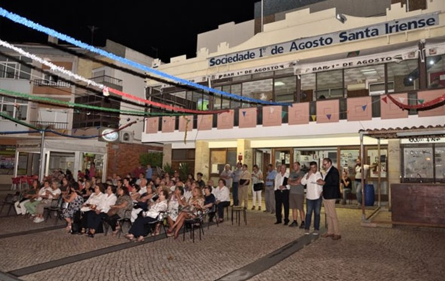
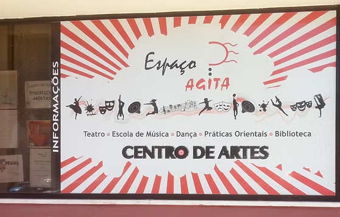
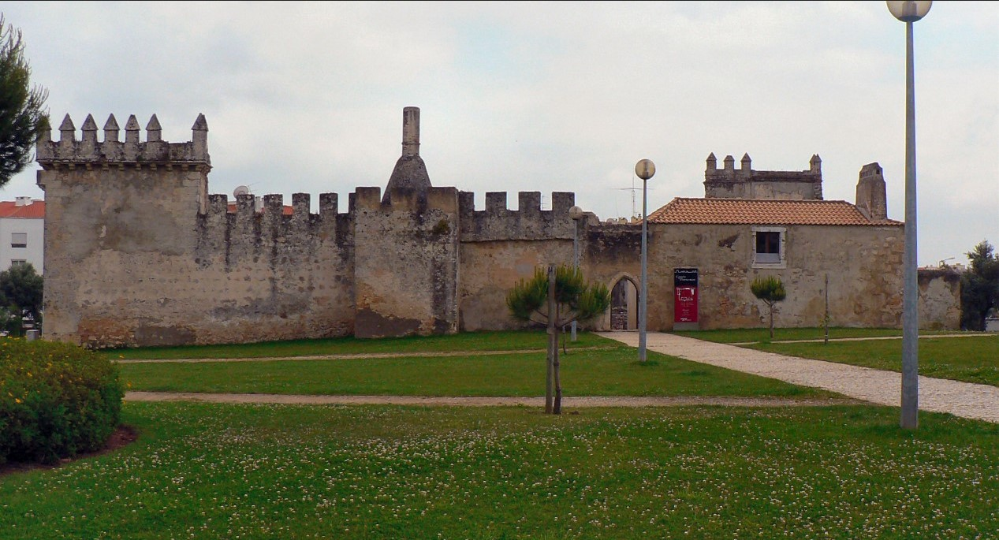
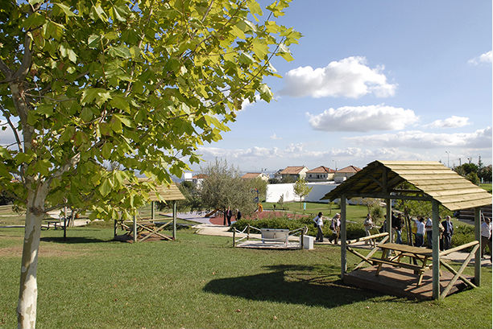
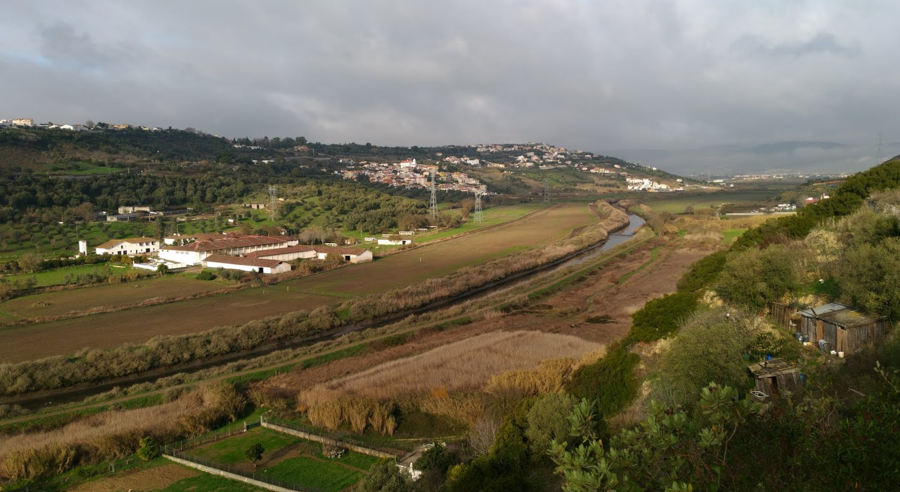
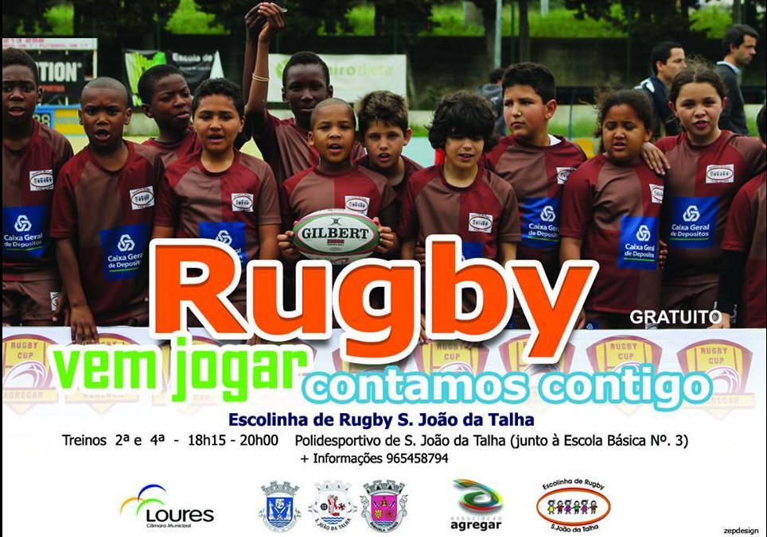
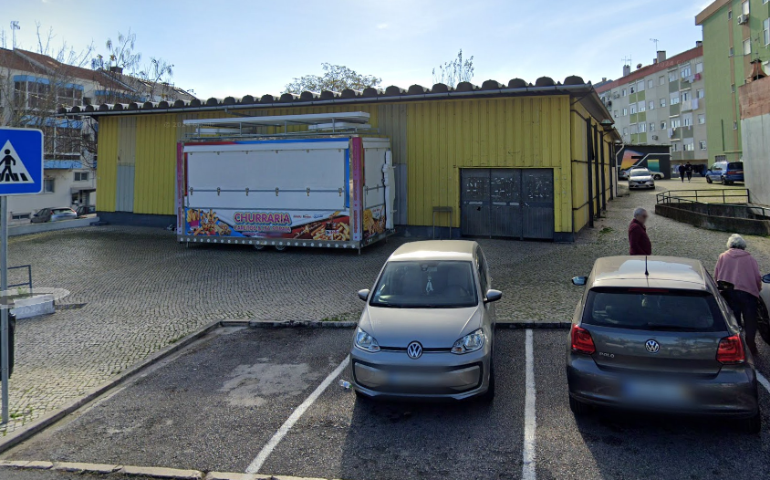
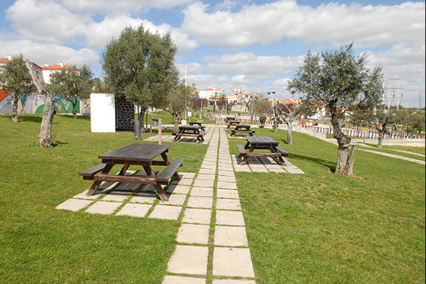
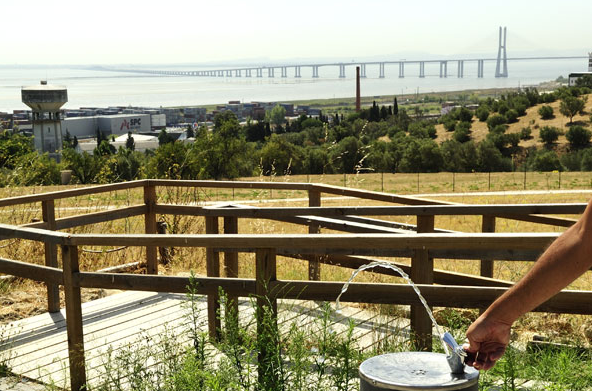
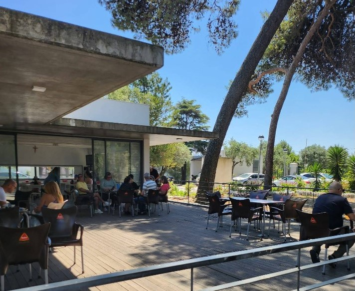

Objetivo
O Roteiro Jovem nasce com o intuito de apresentar-te propostas de locais que podes percorrer para passares os teus tempos livres. Aqui podes encontrar sugestões que te permitem descobrir, de forma lúdica, a freguesia de Santa Iria da Azóia, São João da Talha e Bobadela, desde o desporto, aos espaços verdes e à cultura. Vais aperceber-te que as ofertas de que dispões para passares agradavelmente o teu tempo são várias e diversificadas. Mais do que, provavelmente, esperarias. Quem sabe se não é percorrendo este roteiro que vais descobrir uma atividade que te motive a mexer ou um local que te encante e que passe a ser o teu spot. O Roteiro Jovem é um espaço dinâmico. Iremos sempre adicionando outras sugestões para que possas experimentar novas sensações e convidares os teus amigos, de cá e de outras terras, a experienciá-las contigo.
Locais a visitar
Informações do Evento
Santa Iria da Azóia
40 km em trilhos naturais
9h
5 a 25 anos
Locais a Visitar
-

Sociedade Recreativa 1º de Agosto
-

Agita - Associação Cultural e Juvenil
-

Castelo Pirescoxe
-

Parque Urbano de Santa Iria da Azoia
-

Trilho Junto ao Rio
-

Associação Agregar
-

Mercado de Vale de Figueira
-

Ecoparque de São João da Talha
-

Quinta dos Remédios
-

Café Adro Bobadela